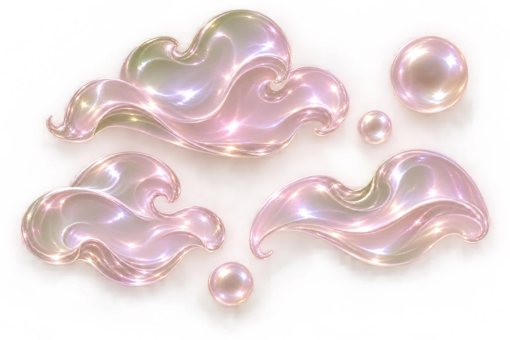
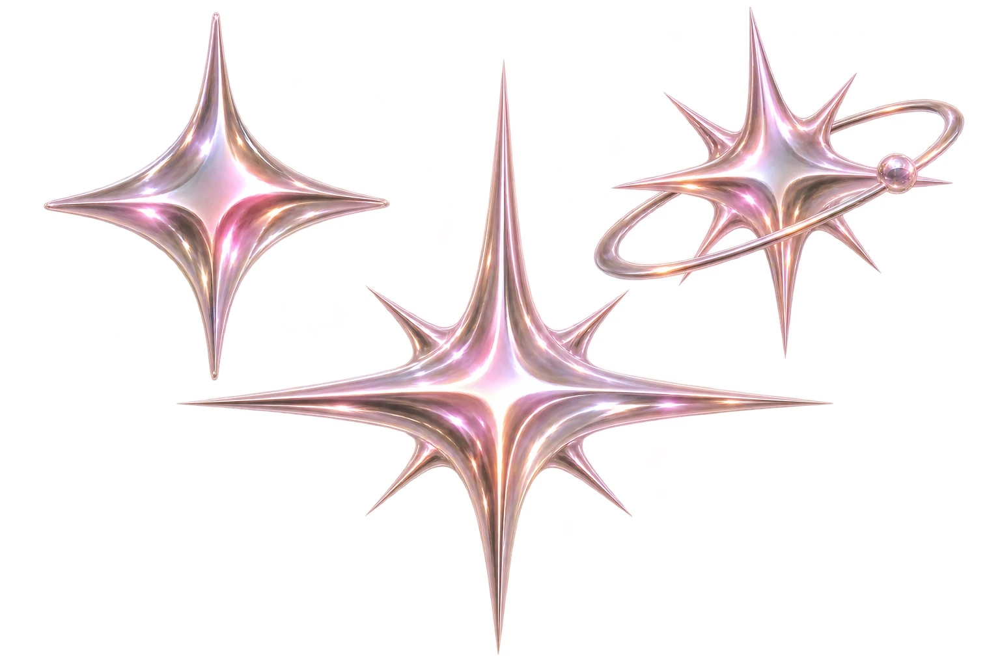
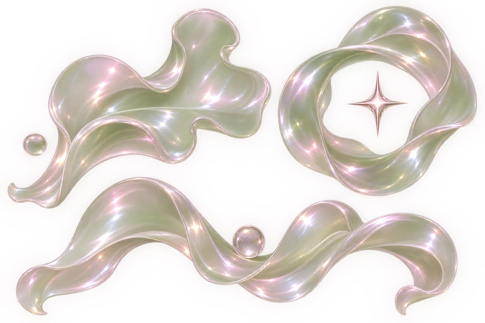
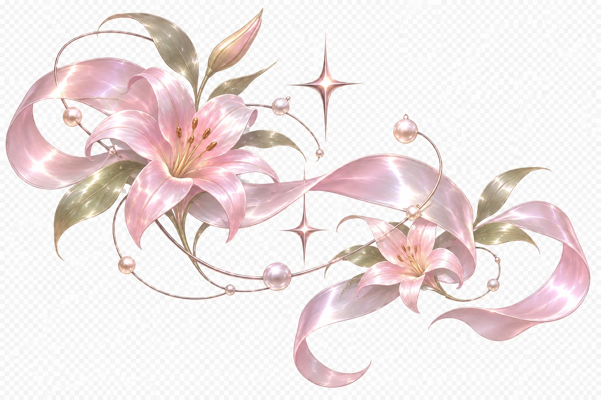
Задай вопрос. Получи знак.
Ответственность за последствия — твоя, мы тут красиво стоим.
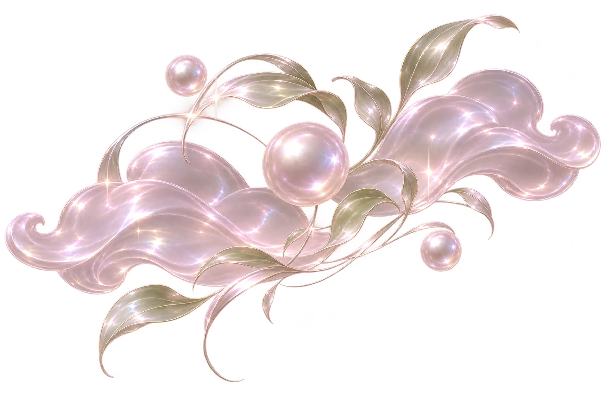
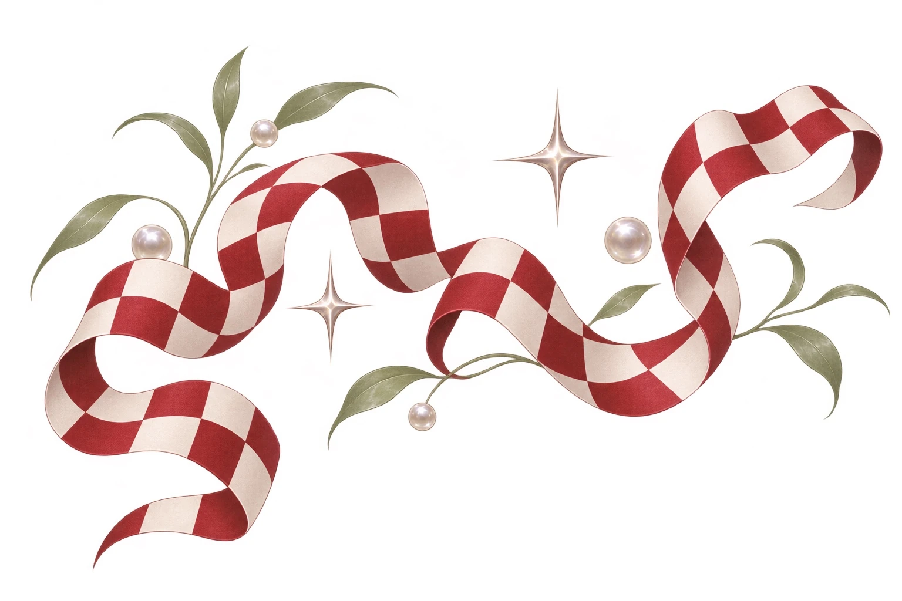
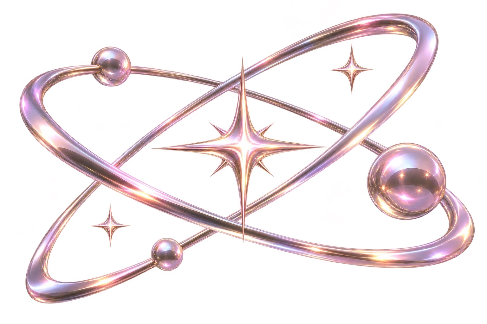
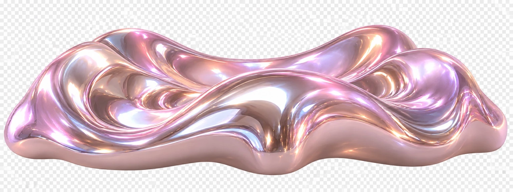
Один вопрос. Один шар. Ноль ответственности за твои решения. Но блеск — безлимитный.
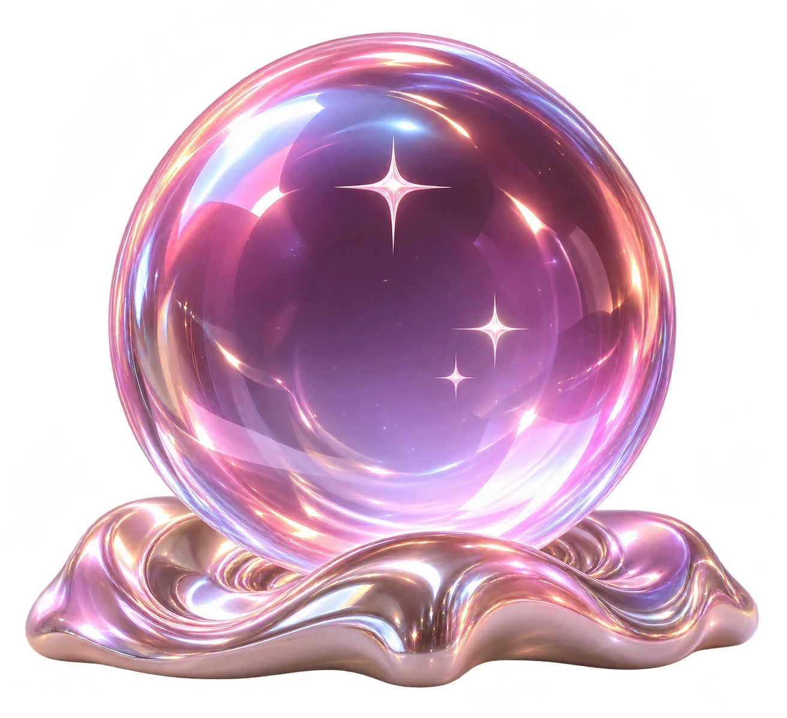
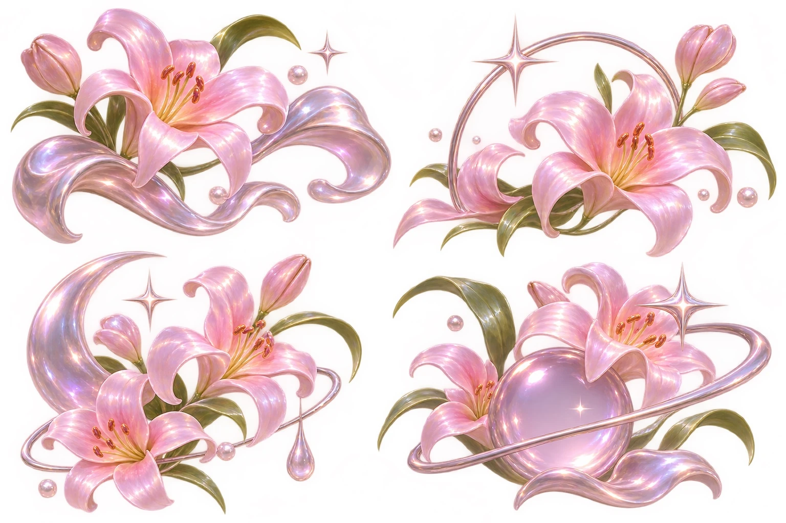
Сегодня не нужно становиться кем-то другим, чтобы тебя заметили. Просто выйди из-за кулис собственной жизни.
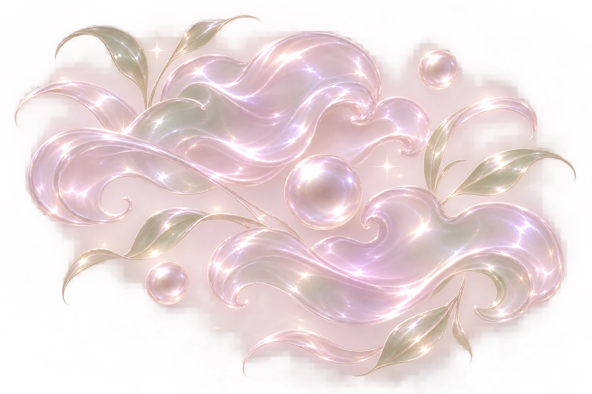
Не пытайся сразу вернуть всё на прежние места. Иногда неожиданность не ломает планы, а показывает, что они давно стали тесными.